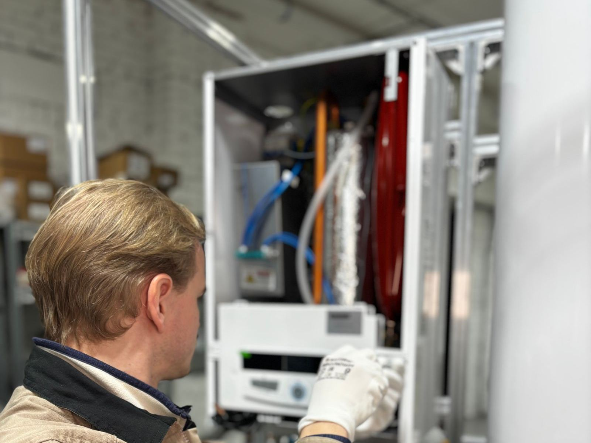

Going tankless changes how your home makes hot water. There is no tank to keep hot, so there is no standby loss while you sleep or travel. When a faucet or shower opens, the unit senses flow and fires, heating water as it moves through a heat exchanger. The result is a continuous supply as long as demand stays within the unit's capacity, a compact footprint on the wall, and a lifespan that can be nearly double that of a typical tank. Families across Mansfield, TX often choose tankless during a replacement or remodel for exactly those reasons.
A good tankless install starts with math, not tools. We total your peak demand in gallons per minute, such as a shower, a kitchen sink, and the dishwasher at once, and compare it against the temperature rise your incoming water needs in winter. That tells us the real capacity you need. Next we check the supply side. Gas tankless units fire at up to around 199,000 BTU, so a half-inch line that fed an old tank is often too small. Condensing models vent through PVC or polypropylene and need a condensate drain, while non-condensing units need stainless steel venting. Electric models are their own case, often needing multiple large breakers and sometimes a service upgrade.
We install every tankless unit with its future maintenance in mind. That means isolation valves for descaling, a gas line with a sediment trap sized for the burner's full demand, venting that meets the manufacturer's rules for length and termination, and a condensate line with a neutralizer on condensing models. If you have hard water, we explain scale protection options before the unit goes on the wall. Optional recirculation can shorten the wait at distant fixtures. We handle permits where required, test the unit at full flow, and show you how it works. Homeowners in Mansfield can call (682) 310-2339 for a demand assessment and a clear quote.
Our most requested service is Water Heater Installation in Mansfield. Either is a good place to start.

How to Tell Something Is Wrong
Recognizing the warning signs early can save you money and keep a slow drip from turning into a flooded utility room. Keep an eye out for the following:
- A far-off sink or bath where a point-of-use unit could help
- Preferring a heater that can be repaired and maintained instead of replaced every decade
- A utility area where a bulky tank takes up room you would rather use
- A tank that cannot keep up with your household's morning routine
- Renovation work that makes gas line and vent changes easier to fit in
- An aging tank that has started to rust, rumble, or leak
- Standby losses on a tank that sits idle for long stretches
- Adding a bathroom, soaking tub, or larger shower that needs more hot water
Early Action Saves Money
Tanks rarely fail all at once. They corrode from the inside for months, and the warning signs show up long before the floor gets wet. Call Mansfield Water Heater at (682) 310-2339 at the first sign of trouble.
Talk to Us About Tankless Water Heater Installation
Call Mansfield Water Heater for fast, reliable service.
Get Help: (682) 310-2339Common Questions We Hear
Why This Job Calls for a Pro
Tankless installation is more involved than swapping a tank. A whole-home gas unit can demand several times the gas flow of a standard tank, and running it on an undersized line causes low flame, error codes, and lukewarm water. Venting is equally specific: condensing units use plastic vent pipe and need a condensate drain, non-condensing units need stainless steel, and neither can simply reuse an existing tank vent in most cases. Electric tankless can require several dedicated high-amperage breakers, and mistakes with gas, venting, or high-amperage wiring carry real fire and carbon monoxide risks.
Our technicians handle the full picture. We size the unit by flow rate and winter temperature rise instead of guessing, verify gas supply at full fire, and install venting and condensate lines exactly to specification. Every install gets isolation valves for easy descaling and a properly piped relief valve. We also give honest advice about whether tankless suits your home at all. For some households, a high-efficiency tank or a heat pump water heater makes more sense, and we will say so before you spend money on a system that does not match how you live.
Our Tankless Water Heater Installation Process
Our workflow is simple and thorough, so nothing gets missed between the fuel supply and the relief line. Here's exactly how a typical visit unfolds:
Size It Right
Sizing starts with your peak demand in GPM and the temperature rise needed for cold incoming water. That pairing tells us which unit will actually keep up.
Supply & Venting Plan
Gas line size, meter capacity, vent routing, condensate drainage, and electrical service all get checked, so the quote reflects the real job.
Installation to Spec
Every connection follows the manual and local code: gas, venting, relief valve discharge, condensate, and service valves for future maintenance, with permits handled where required.
Startup & Verification
Before we leave, the heater runs with multiple fixtures open while we verify gas pressure, venting, and outlet temperature, then we cover maintenance and settings.
Repair or Replace? Let's Figure It Out.
Call Mansfield Water Heater to talk through your situation with an experienced technician.
Call (682) 310-2339 TodayTips to Keep Your Water Heater Healthy
A few simple habits, like an annual flush and a quick look at the relief valve, can add years to a tank. Put these technician-approved steps to work at home:
- Treating hard water protects the heat exchanger from mineral buildup
- In freezing weather, keep the unit powered and insulate exposed piping
- Keep the inlet screen clear so flow stays strong and the unit fires reliably
- Descale the heat exchanger once a year, or more often with hard water
- If the unit shows a recurring code, note it and have it checked
- Set the temperature around 120F for safety and efficiency
- Make sure the outside vent and intake are never blocked
Doing It Yourself vs. Hiring a Technician
Online videos may help in a pinch, yet lasting repairs and code-compliant installs depend on correct venting, proper relief valve discharge piping, and a trained technician. Here's a comparison:
| Consideration | Doing It Yourself | Professional Service |
|---|---|---|
| Capacity | Sized by the box, not your demand | Calculated for your coldest months |
| Gas Line | Undersized line starves the burner | Piping sized to the burner |
| Venting | Old flue reused or wrong vent material | Venting built to the manufacturer's specs |
| Electrical | Wiring undersized for the load | Dedicated breakers sized correctly |
| Future Service | No isolation valves, so descaling is a hassle | Isolation valves installed for quick descaling |
| Result | Lukewarm water and error codes | Steady hot water at real demand |
Get Tankless Water Heater Installation Help Today
Get your hot water back before a small fault turns into a flooded floor. Mansfield Water Heater is ready to respond fast.
Call (682) 310-2339 TodayTankless Water Heater Installation Across the Mansfield Area
Our technicians handle tankless water heater installation throughout Mansfield and the surrounding communities, with the same upfront pricing everywhere we work.